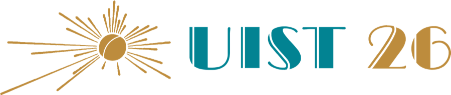

CARVid: Content-Aware Retargeting of Videoswith On-Screen Graphics


1University of Washington2University of Calgary3University of Colorado Boulder4Adobe Research
* Work done during an internship at Adobe Research.
Teaser
Abstract
Editors routinely reframe landscape videos to portrait for social media, but lower thirds, title cards and scoreboards get cropped, shrunk or distorted along the way. CARVid is a content-aware retargeting tool that recovers these graphics from flat, already-published videos and recomposes them for the new aspect ratio. It combines foundation vision and segmentation models with a novel image processing algorithm for text-aware scaling, layout-aware segmentation and content-aware space removal, supporting both automatic and user-directed recomposition.
Why not just crop or scale?
Reframing a 16:9 video to 9:16 the usual ways breaks its graphics: cropping cuts the lower third in half, and scaling the whole frame to fit shrinks it until the text is hard to read. CARVid recomposes the graphic for the new frame instead.
How it works
Decomposition, from video to editable layers
A vision-language model finds each graphic on a reference frame and a segmentation model tracks it into a clean animated layer, with no project files needed.
Recomposition, from least to most disruptive
CARVid tries the gentlest operation first and moves on only when it cannot reach the target width with readable text.
Show the math
- $h_{\text{text}}$
- height of the smallest text in the graphic, measured across the video
- $h_{\min}$
- minimum legible height, 16 px, following platform readability guidelines
Show the math
The removed column is one path $x_{1:F}$ through the clip, chosen to minimize three costs:
$$ \begin{aligned} \min_{x_{1:F}} \quad C_{\text{energy}} & + C_{\text{lookahead}} + C_{\text{motion}} \\[0.3em] C_{\text{energy}} & = \textstyle\sum_f \phi_f(x_f) \\ C_{\text{lookahead}} & = \textstyle\sum_f |x_f - x_{f-1}| \\ C_{\text{motion}} & = \textstyle\sum_f u_f(x_f) \\[0.3em] \text{subject to} \quad x_f \in S_f, & \quad x_f \notin N_f, \quad |x_f - x_{f-1}| \leq B \end{aligned} $$- $\phi_f(x)$
- energy of column $x$ in frame $f$; text, logos and vertical borders are high, so they are never cut
- $|x_f - x_{f-1}|$
- how far the column jumps between frames, which keeps the path steady
- $u_f(x)$
- optical flow near the column, so scrolling text and sliding elements are avoided
- $S_f,\ N_f,\ B$
- eligible low-importance columns, protected no-go regions, and the band the column may move within per frame
The path is removed, the energies are updated, and this repeats until the target width is reached or no path remains.
Show the math
When removing space is not enough, the graphic is cut and reflowed. Candidate columns are ranked on $\overline{E}$, the energy averaged over sampled frames:
$$ x^\star = \arg\max_{x}\ \bigl(w_t\, s_{\text{text}}(x) + w_e\, s_{\text{energy}}(x) + w_a\, s_{\text{edge}}(x) + w_c\, s_{\text{center}}(x)\bigr) $$- $s_{\text{text}}$
- avoids columns with persistent text
- $s_{\text{energy}}$
- prefers low-energy (empty) columns
- $s_{\text{edge}}$
- rewards alignment with existing vertical dividers
- $s_{\text{center}}$
- mildly favors balanced left and right parts; $w$ are their weights
Energy alone cannot tell whether a cut leaves each part meaningful, so the top candidates $\mathcal{C}$ from Eq. 2 go to a vision-language model that picks the final cut $p^\star$:
$$ \begin{aligned} p^\star &= \mathrm{Critic}\bigl(G,\ \overline{E},\ p_{\text{naive}},\ p_{\text{proposer}}\bigr) \\[0.3em] p_{\text{proposer}} &= \mathrm{Proposer}\bigl(G,\ \overline{E},\ \mathcal{C}\bigr) \\ p_{\text{naive}} &= \mathrm{Naive}(G) \\[0.3em] \text{subject to}\quad & \mathrm{Cuttable}(G), \quad \min_{q\in N}|p^\star-q|>3\,\text{px} \end{aligned} $$- $\mathrm{Proposer}$
- chooses among the candidate cuts, drawn as numbered lines on the graphic $G$ and its energy map
- $\mathrm{Naive}$
- proposes a cut from the clean graphic alone, as an independent alternative
- $\mathrm{Critic}$
- compares both, rejects cuts through text or a content group, prefers divider lines, and may nudge the cut or return none
- $\mathrm{Cuttable},\ N$
- cohesive graphics are left whole, and the final cut must stay more than 3 px from any protected region
User-directed control
Editors stay in control: move, delete, scale or crop any segment, or describe an edit in words.
Results
Each row shows the 16:9 input on the left and CARVid's 9:16 output on the right, at the same height.
Citation
To appear in the 39th Annual ACM Symposium on User Interface Software and Technology (UIST 2026).
@inproceedings{gunturu2026carvid,
title = {CARVid: Content-Aware Retargeting of Videos with
On-Screen Graphics},
author = {Gunturu, Aditya and Leake, Mackenzie and
Suzuki, Ryo and DiVerdi, Stephen},
booktitle = {The 39th Annual ACM Symposium on User Interface
Software and Technology},
series = {UIST '26},
year = {2026},
publisher = {Association for Computing Machinery},
doi = {10.1145/3830398.3830716}
}